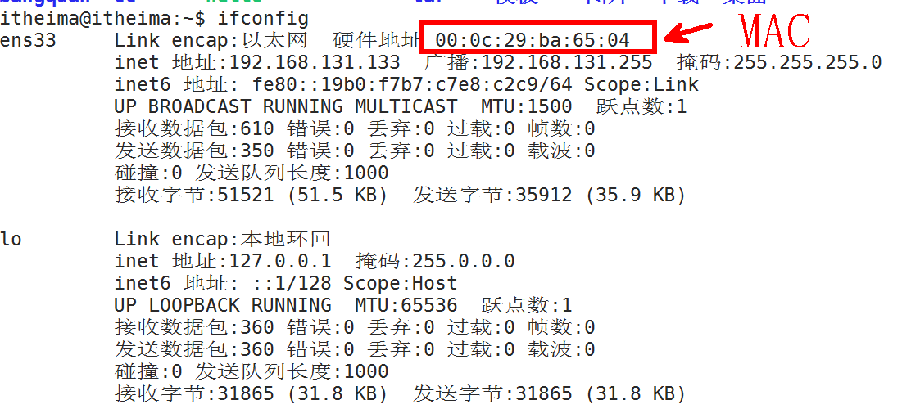

网络基础概念(服务器编程流程,客户端编程流程)
tcp通信-三次握手,四次挥手,
高并发服务器-多线程,多进程实现并发服务器
多路IO技术实现高并发服务器(select,poll,epoll )
线程池实现高并发服务器,udp编程
libevent 库
web服务器
1 mac地址 6个字节 - 48位
标识网卡的id,理论上这个id全球唯一
mac地址一般用来标识主机的id,这个id是物理地址,不会改变

2 IP地址 (ipv4) 4个字节 32位(常用)
ipv6 16 个字节 128位
IP地址是标识主机的id,这个id是虚拟,会改变
一个IP将其分为子网id和主机id
子网id和主机id需要和子网掩码一起来看,
10.1.1.2
255.255.255.0
ip中被连续的1覆盖的位就是子网id
ip中被连续的0覆盖的位就是主机id

ping: 这是一个命令 用来测试两台主机的网络连通性
linux下设置ip命令

ens33是网络名称
192.168.131.133 设置的ip
netmask 子网掩码 255.255.255.0
3 端口 port
用来标识应用程序,一个端口只能用来标识一个应用程序,一个应用程序可以有多个端口
数据包到达主机之后,通过端口号确定这个数据包传输给哪一个应用 程序
端口 2个字节
知名端口: 0-1023
动态端口: 1024-> 65535
4 7层模型(OSI模型)
物理层: ,物理的接口的类型和标准,双绞线的标准, 传输速率等等 (模拟信号转数字信息)
数据链路层: 负责数据帧的收发 (一个数据包达到.数据链路层通过mac地址判断这个数据包是否是发送我我这台主机的)
网络层: 主要是给主机提供路径选择(通过IP地址)(一个数据包达到 ,通过目的ip地址判断这个数据包发送给这台主机)
传输层: 负责将数据递送到应用程序(通过端口)
会话层: 建立链接,
表示层: 解码 01010 - >应用程序可以识别的
应用层: 应用程序
5 tcp/ip四次模型
链路层: 负责数据帧的收发,(mac - mac) 设备到设备
网络层: 负责路径的选择 (ip - ip) 主机到主机
传输层: 负责数据包到应用层的传输(port - port) 进程到进程
应用层: 应用程序 -应用程序
6 协议
协议: 规定了数据包传输的格式 和方式

应用层协议:
HTTP 超文本传输协议
FTP::文件传输协议
TFTP: 简单文件传输协议
NFS: 网络文件系统
传输层协议:
udp: 用户数据报协议
tcp: 传输控制协议
网络层:
IP: 英特网互联协议
IGMP: Internet 组管理协议(ping命令)
链路层:
ARP: 地址解析协议(通过ip找mac地址)
RARP: 反向地址解析协议(mac找ip)
7 数据包的组包和拆包

8 arp包的作用: 用过ip找mac地址

了解arp组包流程:

9 tcp ip udp协议

10 网络开发常用模式
B/S bowser /server浏览器和服务器
C/S client /server 客户端和服务器
11 socket 套接字
作用: 用来实现不同主机间进程间通信

12 字节序
注意:
如果是发送数据:需要将主机数据转成大端发送
如果是接收数据,需要将网络大端的数据转成主机可以识别的数据

13 字节转换函数
#include <arpa/inet.h>
uint32_t htonl(uint32_t hostlong);
主机转网络字节序 ,转4字节
uint16_t htons(uint16_t hostshort);
主机转网络字节序 转2字节
uint32_t ntohl(uint32_t netlong);
网络转主机字节序 转4字节
uint16_t ntohs(uint16_t netshort);
网络转主机字节序 转2字节

14 点分十进制串与整数(网络大端)转换
"192.168.1.2"
#include <arpa/inet.h>
int inet_pton(int af, const char *src, void *dst);
功能: 将点分十进制串转32位大端整数 参数: int af 协议(AF_INET AF_INET6)
const char *src : 需要转换的点分十进制串的首地址
void *dst : 转完之后存放的地址
const char *inet_ntop(int af, const void *src, char *dst, socklen_t size);
功能: 32位大端整数转点分十进制串
参数:
int af 协议(AF_INET AF_INET6)
void *src :需要转换的32位整数
char *dst: 转完之后点分十进制串存的地址
socklen_t size : 存点分十进制串 内存大小

15 sockaddr 结构体
网络通信需要解决三大问题
ip
port
协议
ipv4套接字结构体
struct sockaddr_in {
sa_family_t sin_family; /* address family: AF_INET */
in_port_t sin_port; /* port in network byte order */
struct in_addr sin_addr; /* internet address */
};
/* Internet address. */
struct in_addr {
uint32_t s_addr; /* address in network byte order */
};
ipv6套接字结构体
struct sockaddr_in6 {
unsigned short int sin6_family; /* AF_INET6 */
__be16 sin6_port; /* Transport layer port # */
__be32 sin6_flowinfo; /* IPv6 flow information */
struct in6_addr sin6_addr; /* IPv6 address */
__u32 sin6_scope_id; /* scope id (new in RFC2553) */
};
struct in6_addr {
union {
__u8 u6_addr8[16];
__be16 u6_addr16[8];
__be32 u6_addr32[4];
} in6_u;
#define s6_addr in6_u.u6_addr8
#define s6_addr16 in6_u.u6_addr16
#define s6_addr32 in6_u.u6_addr32
};
#define UNIX_PATH_MAX 108
struct sockaddr_un {
__kernel_sa_family_t sun_family; /* AF_UNIX */
char sun_path[UNIX_PATH_MAX]; /* pathname */
};
我们网络通信传参时可能穿ipv4 套接字结构体,也可能穿ipv6套接字结构体,所以为了统一标准,统统将iPv4和ipv6套接字结构体地址转成
通用套接字结构体
struct sockaddr
send(struct sockaddr_in ,data);//ipv4
send(struct sockaddr_in6 ,data);//ipv6
fun(int a)
fun(char a)
fun(int *)
fun(char *)
fun(void *)
struct sockaddr_in a;
//struct sockaddr 通用套接字结构体相当于void*
send((struct sockaddr *)&a,data);
16 tcp的通信
tcp : 传输控制协议 面向连接 安全可靠,丢包重传
先连接 在使用 释放(抽象的打电话模型)
udp: 用户数据报协议 不面向连接(抽象的邮件模型) 不安全,丢包不重传
udp的效率高
17 tcp的客户端和服务器通信流程

18 socket套接字创建
#include <sys/socket.h>
int socket(int domain, int type, int protocol);
功能: 创建套接字
参数:
domain:协议 AF_INET AF_INET6
type:
SOCK_STREAM: 流式套接字,用于tcp通信
SOCK_DGRAM: 报式套接字 ,用于udp通信
protocol : 0
返回值: 创建的socket套接字(文件描述符)
19 connect 连接
#include <sys/socket.h>
int connect(int sockfd, const struct sockaddr *addr,
socklen_t addrlen);
功能: 连接服务器
参数:
sockfd: socket套接字
const struct sockaddr *addr : ipv4套接字结构体的地址,转成struct sockaddr *
socklen_t addrlen: ipv4结构体大小
20 tcp客户端通信流程
1 创建套接字 socket
2 连接服务器 connect
3 收发数据 read write
4 关闭套接字 close